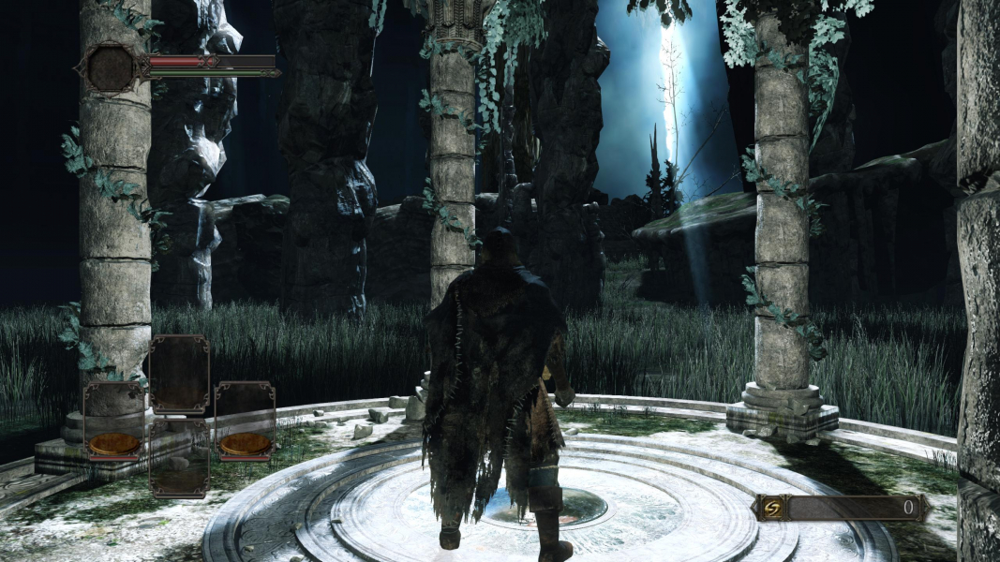
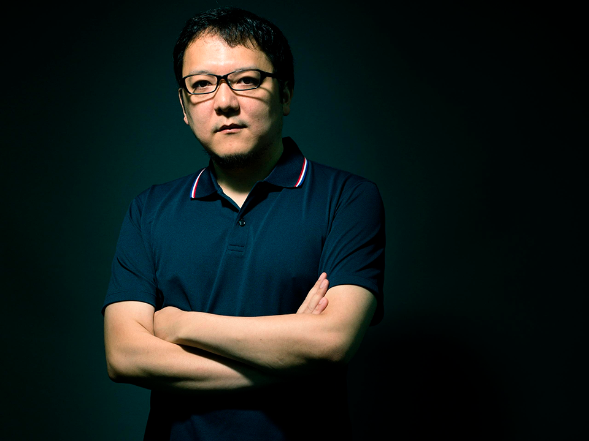
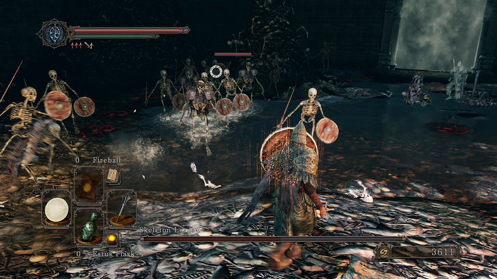

Por que Dark Souls 2 é tão odiado?
É fato que a série souls tem jogos excepcionais e consistentes e o trabalho da From Software no Dark Souls 2 não foi diferente dos outros jogos, mas o que exatamente faz DS2 ser tão hateado?
1. Mecânica de maldição
Diferente dos outros jogos da série, o Dark Souls 2 tem uma mecânica de maldição após a morte do jogador. Quando o player morre a sua vida é reduzida em pequenas quantidades, com o passar das mortes, a vida fica na metade e o jogador só recupera o HP totalmente quando usa uma Éfigie Humana. Essa mecânica já existia no Dark Souls 1, mas só acontecia caso o player fosse petrificado por um Basilísco, efeito revertido a
2. Desenvolvimento sem Miazaki
É meus amigos, Dark Souls 2 não teve tanto envolvimento direto do criador da série, já que estava participando de outro projeto o Bloodbourne que iria sair para PS4 em 2015. Entretanto estava supervisionando o projeto. Em uma entrevista, Hidetaka diz que o jogo tem sim, importância para a série, mas que ele deveria ter sido mais ativo no projeto.
3. Hitbox "quebrada"
Controverso ein? Na verdade, o jogo em seu lançamento tinha sim a hitbox péssima, golpes especiais de bosses sempre pegavam mais longe do que os olhos viam, mas esse problema foi resolvido com patches de correção, e hoje na versão Scholar of the First Sin, não temos mais esses problemas, se você reclama disso, é choro mesmo.
4. Muitos inimigos
Dark Souls 1 dificilmente colocava muitos inimigos em um mesmo espaço e se fosse feito, normalmente eram inimigos fracos e bem distribuídos. Já no Dark Souls 2, tenho que admitir, o jogo spama MUITOS inimigos. Na floresta dos Gigantes Caídos, a primeira área de verdade do jogo, nós temos 7 inimigos iguais nos esperando, e na versão Scholar, ainda tem um ciclope junto pra atrapalhar nossa vida.